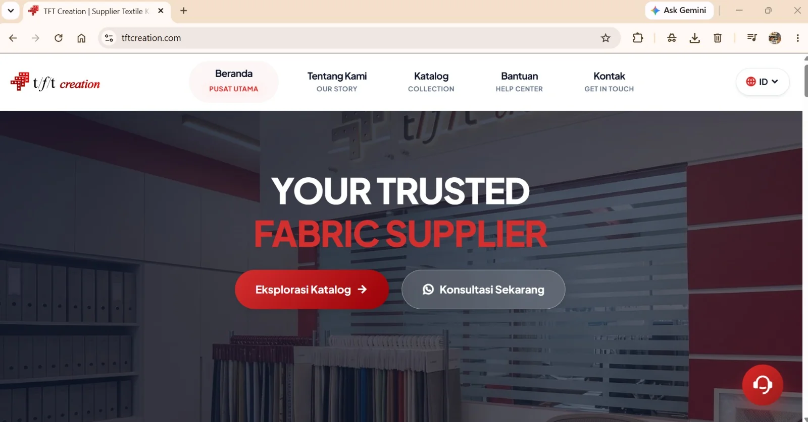

Interactive textile catalogKatalog kain interaktif
Fabric collections organized into categories with product details.Koleksi kain dikelompokkan menurut kategori dan detail produk.
Development of a textile website with an interactive product catalog, fabric discovery tools, sample inquiries, and a dedicated administrative dashboard. Pengembangan website tekstil dengan katalog produk interaktif, filter kain, permintaan sampel, serta dashboard khusus untuk pengelolaan data dan produk.

I built a responsive B2B textile website and admin interface to connect customers with fabric products and help administrators manage the catalog. Saya membangun website bisnis tekstil B2B yang responsif, lengkap dengan katalog kain, fitur pelanggan, dan sistem administrasi produk.
The project combines PHP and CodeIgniter on the backend, MySQL for data storage, and HTML, CSS, JavaScript and Bootstrap for responsive, interactive user interfaces. Development used VS Code and XAMPP. Website dikembangkan menggunakan PHP dan CodeIgniter di backend, MySQL sebagai database, serta HTML, CSS, JavaScript, dan Bootstrap untuk antarmuka responsif. Pengembangan dilakukan melalui VS Code dan XAMPP.
From the first impression to browsing fabric categories, product details, and submitting sample requests. Select any screen to enlarge.Mulai dari beranda, kategori kain, detail produk hingga formulir permintaan sampel. Klik gambar untuk memperbesar.
Fabric collections organized into categories with product details.Koleksi kain dikelompokkan menurut kategori dan detail produk.
Tools to help customers narrow down relevant materials.Fitur pencarian untuk menemukan material yang dibutuhkan.
A clear path from product exploration to customer inquiry.Alur sederhana dari pemilihan produk ke permintaan pelanggan.
Product administration, catalog management and dashboard views.Pengelolaan produk, katalog, dan tampilan dashboard.
Dashboard, product management, visitor analytics and product administration screens.Tampilan dashboard, pengelolaan produk, analitik pengunjung, dan administrasi katalog.
Server-side application structure and business logic.Struktur aplikasi dan logika bisnis di sisi server.
Relational database for products, categories and business records.Database relasional untuk produk, kategori, dan data bisnis.
Semantic page structure for the customer site and admin portal.Struktur halaman semantik untuk website pelanggan dan admin.
Custom responsive layouts and styles.Layout responsif dan tampilan CSS kustom.
Interactive product browsing and application interactions.Interaksi katalog dan antarmuka aplikasi.
Responsive UI components and layout utilities.Komponen tampilan dan utilitas layout responsif.
Primary editor for development and maintenance.Editor kode untuk pengembangan dan pemeliharaan.
Local PHP and database development environment.Lingkungan pengembangan lokal PHP dan database.
Understanding business requirements and website objectives. Memahami visi, persyaratan bisnis, dan tujuan website.
Designing structure, layout, visual hierarchy, and interactions. Mendesain struktur, tata letak, hierarki visual, dan *flow* pengguna.
Implementing responsive front-end, backend, and database. Pengkodean *front-end*, *backend*, dan koneksi ke database.
Testing functionality, responsiveness, and compatibility. Pengujian secara utuh terhadap fungsi, responsivitas, dan bug.
Final staging, deployment, and post-launch optimization. *Staging* akhir, perilisan publik, dan optimasi performa *server*.